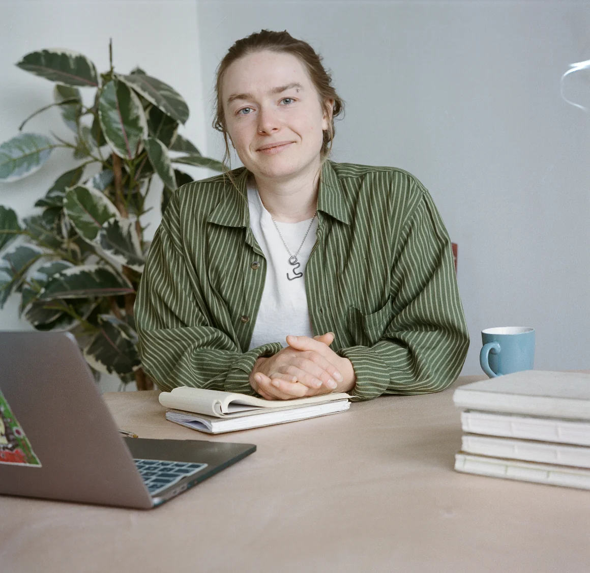
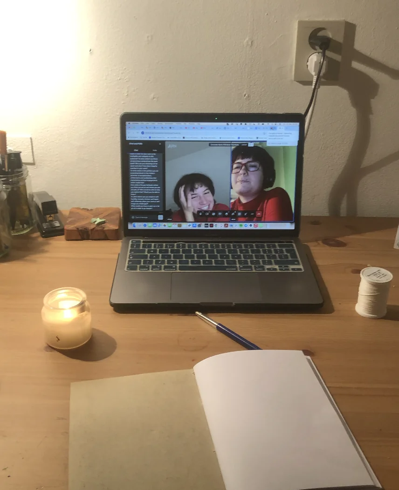
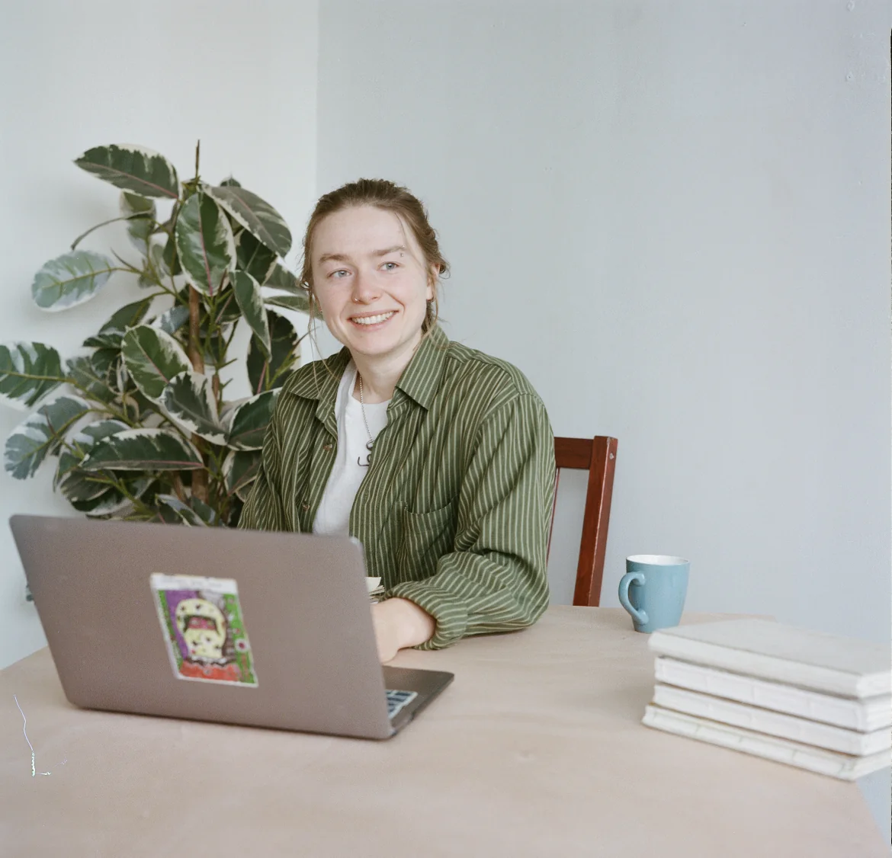

What's something you wish you could say?
What’s something you haven’t found the right words for yet?

Hi I’m Miche. I’m a writer that asks a lot of questions, for when you need copy that doesn’t just sound good but has real depth and value.
The things I write include:
- Brand writing and website copy
- Digital content (emails, blogs, interviews, workshops descriptions)
- Copywriting and proofreading
- Research and development
- Fiction and creative writing
- Workshop facilitation
What else you get from working with me (aside from great text)
- An outside perspective on your work
- Someone to probe your concept deeper by challenging your thinking
- A chance to externalise messy thoughts and make sense together
- A thinking partner to sound board new ideas with
- Greater confidence in your work
- More precision and intention in your direction

How I work
Gather and understand
The first step is getting to know you and the project deeper through socratic style conversation and questionnaire. This generates a lot of material which I start putting onto paper - mind maps, drawing, diagramming, word banks and free association. I read articles and texts related to your concept, find examples of copy and references. Now I have a juicy bank of ideas to take into the writing phase.
Writing
I start by freewriting on paper - this lets me get loose and find a voice that feels more conversational rather than corporate. I transfer this to a document and get more refined, threading in all those ideas from the gathering phase. It's ultimately a process of structuring information, deciding what is important and how each idea will connect to the next, while also giving it personality and character.
Delivery
After a round or two of reviewing and making changes, that initial swarm of ideas has found a lovely coherent form, full of quirks and details that feel like you. Intentional and elegant.
"Miche has an ease for finding the words that can connect and reveal the essence of things, even when dealing with complex ideas. Her perspective comes, I think, from a constant desire to understand beyond what is immediately apparent."
Leny Garcia, Business Strategist, Rocoto Berlin
"What stands out to me about Miche is the way she structures her work with intentionality and thoughtfulness. She is never short of fresh ideas that she is able to implement under time constraints in a way where the end result always feels worthwhile."
Sascha Sandor, Artist
My services
These are the main ways I work with clients — though most projects end up shaped around whatever they actually need.
Brand Writing
For freelancers, independent small businesses and organisations
- Finding the words to describe who you are and what you do
- Making your services easier to understand for your clients or audience
- Website copy (taglines, UX, SEO)
- Developing an authentic and coherent tone
- Digital content writing (newsletters, blogs, social media, video scripts, interview transcripts)
Examples of past work
Mette Theilmann+
"Working with Miche as a copywriter was not only helpful but also highly inspiring and insightful. She brought a thoughtful and creative approach to the process, by asking questions that gently challenged and expanded my ideas and concepts. This helped us bring greater depth, meaning and authenticity to a business concept that was complex and deeply personal."
"I would highly recommend Miche to anyone looking for thoughtful, creative and meaningful copywriting, that is standout and not the generic AI content that is everywhere today."
Mette Theilmann, mettetheilmann.com
Creative Writing
For artists, filmmakers, storytellers, cultural workers
- Helping develop creative concepts, narratives and stories
- Creative writing on projects
- Research and development
- Treatment writing
- Grant funding writing
Examples of past work
Studio ANRK+
In-house writer and researcher from 2022-2023
"Miche's research and creative work was the backbone of the early development work on two key projects, Camp Century and There Exists, as well as helpful on several others. Piecing together the story and diving deep on the historical accuracy of our work, Miche brought rigour and curiosity, and an ability to process often complex, contradictory information in a way that kept us focused on our longer term goals, while discovering the small, human facts that made sure our research didn't just inform the project but shaped its emotional and narrative core. It was a real pleasure and I'd work with Miche again in a heartbeat."
Anrick Bregman, Founder of Studio ANRK and Edge
Arvid and Marie+
For the artist duo I assisted on conceptualising and writing the script for their talking massage chair installation.
Audiences could select from prewritten responses to navigate a choose-your-adventure style interaction that explored intimacy and automation.
Workshops
Organisations, Schools, Festivals and Individuals
Experiential and playful writing workshops for all levels exploring specific themes and writing processes.
I also offer 1-1 writing mentorship for personal or professional writing projects.
Learn more and see past examples of work. →Examples of past work
Robin Schubert+
Hi, I'm Miche!

I am the copywriter for people who want to do more than just sell.
For people who share the feeling that we need something else in the world right now, even if we are not sure what that something else is yet. For people who believe we need to try anyway.
I am an artist, musician and writer, raised in the UK and based in The Netherlands. I care deeply about the ideas we have and believe we need good ideas more than ever to face the crises we are living through.
Writing for me is the vessel that can carry these ideas into the world. I aspire to write words that make people and structures move. That are sticky and contagious and irresistible, so that our ideas can travel and take root outside of ourselves.
Get in touch hereFrequently asked questions
How much does it cost?+
My costs vary depending on who I am working with and the scope of the project. To give you an idea of what I have charged my clients recently:
- - Complete website package for a small independent business (homepage, about me and 3 additional pages) - 600 €
- - Reviewing and giving feedback on existing website copy - 60 €
- - Writing an 'About me' text - 120 €
- - Writing a workshop description - 90 €
I always factor time for research and revisions into my price. Although the writing itself might only take an hour, as much time, if not more, is spent researching and understanding before the writing can actually begin. For example, writing an About Me section for a website requires:
- - 1 hour reviewing your existing documents/work/website
- - 1 hour compiling a questionnaire and reviewing answers
- - 1 hour writing a first draft
- - 1 hour revisions and final draft
4 hours total at 30€/hour = 120€
I hope that gives you a better idea. But don't hestitate to get in touch and we can talk about a more specific quote.
Why do I need a copywriter?+
Can't I just use AI?+
What do you need from me?+
When I start working with a new client, on a website, a workshop concept or other project, I usually ask for the following things:
- Examples of previous or existing copy (from websites or other material) so I can get an idea of the voice and style you are already using.
- More info about yourself, organisation or business (usually from a website or CV).
- An outline of the project you need copy for. This can be a messy and unformulated document of thoughts. In fact, I prefer to receive a document written in your own, unedited voice than something that has already passed through ChatGPT.
- I send you a questionnaire to fill out with questions about the intention and goal of your project, the tone you are aiming for and the practicalities the text needs to fulfill.
Then I get started!
How long does it take?+
I usually send you a first draft within a few days, you tell me what you like or don't like, and from there I create the final copy.
A full website copy takes a little longer, usually between 2-3 weeks.
I'm ready to get started.
Reach me through the form below and let's see how we can work together. I’d love to hear from you.